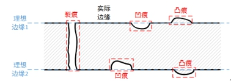
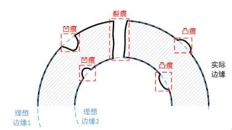
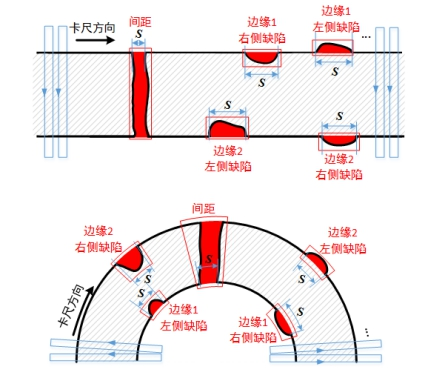

边对检测工具与边检测工具一样，也是用于目标物体边缘的连贯性检测，检测边缘是否有凹痕/凸痕/裂痕，不同的是，边对检测工具是双边缘检测模式，用于检测具有一定宽度的直线（段）或圆环（段）。边对检测示意如图1所示。
 
| 分类 | 参数名称 | 参数描述 |
|---|---|---|
| 属性窗口 | 边缘极性1 | 理想边缘1的边缘极性，分为3种：任意极性、亮到暗和暗到亮。 |
| 边缘极性2 | 理想边缘2的边缘极性，分为3种：任意极性、亮到暗和暗到亮。 | |
| 对比度阈值 | 卡尺工具默认只采用对比度评价分数，即按照边缘信号的强度来评分，输出边缘最强的点。对比度阈值的取值范围是0~255。 | |
| 滤波器半宽 | 卡尺工具在直线（圆）的拟合过程中，会对图像进行滤波处理以增强边缘信息，其中滤波半宽是可调的，滤波半宽默认值为1。 | |
| 第一边缘 | 选择“是”，则启用第一边缘准则以获取最佳边缘。 |
|
| 最强边缘 | 选择“是”，则启用最强边缘准则以获取最佳边缘。 | |
| 对尺寸是否有效 | 与第一边缘和最强边缘一样，都是用来评价边缘的。对尺寸准则以绝对归一化宽度差作为评价指标，宽度差越小，分数越高。选择“是”，则启用对尺寸准则。 | |
| 分数阈值 | 对所有边缘进行评分，会得到一个评价分数，分数阈值是边缘评分的阈值，高于该阈值且评分最高的边缘被选为拟合边缘和候选边缘。 | |
| 是否过滤异常值 | 过滤异常值的目的是对拟合边缘（点）进行筛选，以降低偏差边缘给拟合带来的干扰。筛选的原则是基于拟合点在卡尺搜索方向上到拟合直线（圆）的距离，过滤距离较大的点，根据设定的距离阈值对拟合边缘进行更新。 | |
| 过滤距离阈值 | 过滤掉到拟合直线（圆）的距离大于过滤阈值的拟合点。以直线边缘为例，在卡尺搜索方向上，若拟合点到拟合线的距离大于过滤距离阈值，则去除该拟合点，剔除掉所有距离过大的拟合点后，再由剩下的其它拟合点重新拟合直线。 | |
| 是否重新评分 | 重新评分的目的是对候选边缘进行更新，以降低干扰边缘带来的误判。重新评分添加边缘到拟合线的距离作为新的评价指标，对每个卡尺的所有边缘进行评分，距离越小，分数越高，分数取值范围为[0,100]。重新评分后，将“重新评分”准则代替“第一边缘”准则（若有），再与“最强边缘”准则（若有）作几何评价，得到最终的评价分数，然后在每个卡尺内，选取分数最高的作为候选边缘。 | |
| 是否重新拟合 | 重新拟合是在重新评分的基础上更新拟合边缘：先将重新评分得到的候选边缘作为拟合边缘，若需要过滤异常值，则与过滤异常值拟合过程一样，先拟合直线（圆），根据拟合边缘到拟合线的距离剔除距离异常的拟合边缘，更新拟合边缘。 | |
| 最小缺陷距离 | 缺陷边缘到拟合线的最小距离，小于该距离，则不认为是缺陷。 | |
| 最大缺陷距离 | 缺陷边缘到拟合线的最大距离，大于该距离，则不认为是缺陷。 | |
| 是否启用尺寸 | 选择“是”，则显示最小尺寸和最大尺寸参数，并根据最小尺寸和最大尺寸对缺陷结果进行过滤。 | |
| 是否启用面积 | 选择“是”，则显示最小面积和最大面积参数，并根据最小面积和最大面积对缺陷结果进行过滤。 | |
| 缺陷排序规则 | 排序规则分为3种：尺寸、面积和位置，根据选择的规则对缺陷结果进行排序。其中，尺寸和面积为从大到小排序，位置为沿着卡尺方向从左到右排序。 | |
| 是否过滤左边缺陷 | 沿着卡尺方向，位于拟合线左侧的缺陷为左侧缺陷。该参数选择“是”，则在缺陷结果中将左侧缺陷过滤掉。 | |
| 是否过滤右边缺陷 | 沿着卡尺方向，位于拟合线右侧的缺陷为右侧缺陷。该参数选择“是”，则在缺陷结果中将右侧缺陷过滤掉。 | |
| 最大缺陷数目 | 缺陷结果数目的最大值，若缺陷数目超过该值，则按照缺陷排序规则，过滤掉缺陷结果中排在后位的缺陷。 | |
| 是否检测间距 | 选择“是”，则同时检测缺陷和间距，并显示最大间距数目、最小间距、最大间距、是否忽略端点间距、间距排序规则等参数。 | |
| 最大间距数目 | 间距结果数目的最大值，若间距数目超过该值，则按照间距排序规则，过滤掉间距结果中排在后位的间距。 | |
| 最小间距 | 卡尺边缘到拟合线的最小距离，小于该距离，则不认为是间距。 | |
| 最大间距 | 卡尺边缘到拟合线的最大距离，大于该距离，则不认为是间距。 | |
| 是否忽略端点间距 | 选择“是”，则忽略掉端点间距。端点间距是在检测区域范围内位于两端的间距。 | |
| 间距排序规则 | 排序规则分为3种：尺寸、面积和位置，根据选择的规则对间距结果进行排序。其中，尺寸和面积为从大到小排序，位置为沿着卡尺方向从左到右排序。 | |
| 是否显示拟合结果 | 选择“是”，则显示图像检测区域内的拟合直线（圆）。 | |
| 是否显示缺陷区域 | 选择“是”，则显示图像检测区域内的缺陷。 | |
| 是否显示间距区域 | 选择“是”，则显示图像检测区域内的间距。 | |
| 图像窗口 | 检测区域 | 图像中参与检测的矩形或环形区域。 |
| 输入图像 | 显示待检测的图像。 | |
| 数据链 | 输入图像 | 输入图像宽度、高度、像素大小，同图像窗口的输入图像参数。 |
| 二维线性变换 | 目标相对于模板的平移、旋转、缩放变换。 | |
| 高级界面 | 无 |
| 分类 | 参数名称 | 参数描述 |
|---|---|---|
| 监视窗口 | 输入图像 | 输入图像的宽度、高度、像素大小。 |
| 间距结果显示 | 间距的位置、尺寸、面积等信息。 | |
| 执行结果 | 工具执行结果。 | |
| 执行时间 | 工具执行时间。 | |
| 图像窗口 | 输入图像 | 显示工具执行结果图像，同监视窗口的输入图像参数。 |
| 拟合直线（圆） | 属性窗口的是否显示拟合结果参数选择是时，显示图像检测区域内的拟合直线（圆）。 | |
| 缺陷结果 | 属性窗口的是否显示缺陷结果参数选择是时，显示图像检测区域内的缺陷结果。 | |
| 间距结果 | 属性窗口的是否显示间距结果参数选择是时，显示图像检测区域内的间距结果。 | |
| 执行结果 | 显示工具执行结果，执行成功显示“OK”，执行失败显示“NG”，同监视窗口的执行结果参数。 | |
| 数据链 | 输出图像 | 输出图像的宽度、高度、像素大小，同监视窗口的输入图像参数。 |
| 间距结果显示 | 输出间距的位置、尺寸、面积等信息，供后序工具使用，同监视窗口的间距结果显示参数。 |
偏差：缺陷和间距的统称。
缺陷：边缘的凹/凸痕即为缺陷，计算卡尺找到的边缘到拟合线的距离，距离在阈值之内则认为该卡尺区域存在缺陷。
间距：边缘的裂痕即为间距，采用卡尺精确定位边缘位置，没有定位到边缘则认为该卡尺区域存在间距。

偏差区域：缺陷或间距的区域，如图2红色线条所示，其中直线边缘用仿射矩形表示，圆边缘用扇形表示。
偏差位置（PosX，PosY）：偏差位置为偏差区域右下角一点。
偏差尺寸（Size）：即缺陷或间距的尺寸，如图2中S所示，它是左右缺陷卡尺与拟合直线（圆）交点的线段（弧）长度。
偏差面积（Area）：缺陷面积是缺陷卡尺候选点到拟合直线（圆）距离的均值与尺寸的乘积，间距面积是卡尺搜索长度与尺寸的乘积。
依次对单个卡尺的所有边缘进行评分，获取评价分数最高的边缘，作为拟合边缘和候选边缘。边对检测工具提供“第一条边缘”、“最强边缘”、“对尺寸”三个准则来评价边缘。三个准则至少选取一个，若三个准则同时采用，取三个准则评价分数的几何平均作为评价分数。
其中，“第一条边缘”和“最强边缘”准则可以参见边检测工具。“对尺寸”准则以绝对归一化宽度差作为评价指标，宽度差越小分数越高，分数值域为[0,100]。绝对归一化宽度差可以用下式表示
其中，d为实时图像上两边缘间距，w为理想边缘模型中两边缘间距。
获得拟合边缘后，即可进行直线（圆）的拟合（全部参与拟合，无局外点）。需要说明的是，最佳边缘对划分为两组，其中第一边缘为一组，第二边缘为另一组，分别进行拟合，后续处理也是与各自边缘一一对应。
参见“\Samples\边特征检测工具结果解析.gvp”。